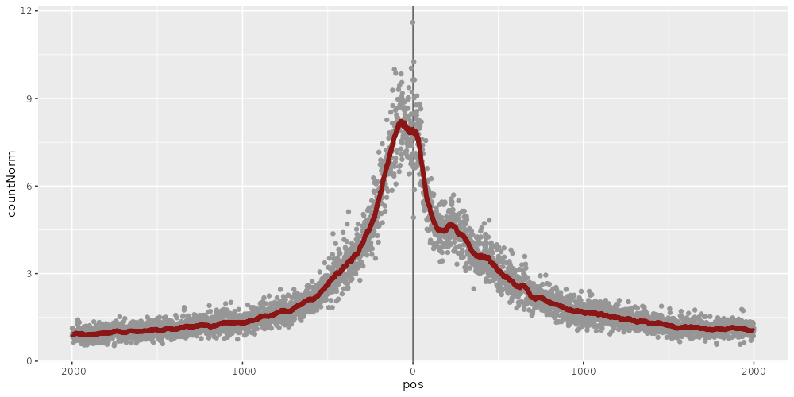

This report was generated on 2026-08-03 by muReportR version 0.3.
This ATAC-seq dataset contains accessibility profiles for 8 samples. The table below contains an overview of the provided sample annotation.
| sampleId | tissue | time | replicate | bamFile | .bamPath | |
| kidney_14_5_REP1 | kidney_14_5_REP1 | kidney | 14.5 | 1 | /vol/COMPEPIWS/groups/atacseq1/tasks/nextflow_run/results/bwa/merged_library/kidney_14_5_REP1.mLb.clN.sorted.bam | /vol/COMPEPIWS/groups/atacseq1/tasks/nextflow_run/results/bwa/merged_library/kidney_14_5_REP1.mLb.clN.sorted.bam |
| kidney_14_5_REP2 | kidney_14_5_REP2 | kidney | 14.5 | 2 | /vol/COMPEPIWS/groups/atacseq1/tasks/nextflow_run/results/bwa/merged_library/kidney_14_5_REP2.mLb.clN.sorted.bam | /vol/COMPEPIWS/groups/atacseq1/tasks/nextflow_run/results/bwa/merged_library/kidney_14_5_REP2.mLb.clN.sorted.bam |
| kidney_15_5_REP1 | kidney_15_5_REP1 | kidney | 15.5 | 1 | /vol/COMPEPIWS/groups/atacseq1/tasks/nextflow_run/results/bwa/merged_library/kidney_15_5_REP1.mLb.clN.sorted.bam | /vol/COMPEPIWS/groups/atacseq1/tasks/nextflow_run/results/bwa/merged_library/kidney_15_5_REP1.mLb.clN.sorted.bam |
| kidney_15_5_REP2 | kidney_15_5_REP2 | kidney | 15.5 | 2 | /vol/COMPEPIWS/groups/atacseq1/tasks/nextflow_run/results/bwa/merged_library/kidney_15_5_REP2.mLb.clN.sorted.bam | /vol/COMPEPIWS/groups/atacseq1/tasks/nextflow_run/results/bwa/merged_library/kidney_15_5_REP2.mLb.clN.sorted.bam |
| liver_14_5_REP1 | liver_14_5_REP1 | liver | 14.5 | 1 | /vol/COMPEPIWS/groups/atacseq1/tasks/nextflow_run/results/bwa/merged_library/liver_14_5_REP1.mLb.clN.sorted.bam | /vol/COMPEPIWS/groups/atacseq1/tasks/nextflow_run/results/bwa/merged_library/liver_14_5_REP1.mLb.clN.sorted.bam |
| liver_14_5_REP2 | liver_14_5_REP2 | liver | 14.5 | 2 | /vol/COMPEPIWS/groups/atacseq1/tasks/nextflow_run/results/bwa/merged_library/liver_14_5_REP2.mLb.clN.sorted.bam | /vol/COMPEPIWS/groups/atacseq1/tasks/nextflow_run/results/bwa/merged_library/liver_14_5_REP2.mLb.clN.sorted.bam |
| liver_15_5_REP1 | liver_15_5_REP1 | liver | 15.5 | 1 | /vol/COMPEPIWS/groups/atacseq1/tasks/nextflow_run/results/bwa/merged_library/liver_15_5_REP1.mLb.clN.sorted.bam | /vol/COMPEPIWS/groups/atacseq1/tasks/nextflow_run/results/bwa/merged_library/liver_15_5_REP1.mLb.clN.sorted.bam |
| liver_15_5_REP2 | liver_15_5_REP2 | liver | 15.5 | 2 | /vol/COMPEPIWS/groups/atacseq1/tasks/nextflow_run/results/bwa/merged_library/liver_15_5_REP2.mLb.clN.sorted.bam | /vol/COMPEPIWS/groups/atacseq1/tasks/nextflow_run/results/bwa/merged_library/liver_15_5_REP2.mLb.clN.sorted.bam |
Sample annotation table as TSV file
Signal has been summarized for the following region sets:
| #regions | transformations | |
| tiling | 280370 | |
| promoter | 1216 | |
| consensusPeaks | 6259 |
Fragment data IS available.
This section contains per-sample quality control plots and data. The table below contains fragment counts for each sample.
| #fragments | |
| kidney_14_5_REP1 | 1526264 |
| kidney_14_5_REP2 | 1765791 |
| kidney_15_5_REP1 | 1731145 |
| kidney_15_5_REP2 | 1946286 |
| liver_14_5_REP1 | 886943 |
| liver_14_5_REP2 | 2211394 |
| liver_15_5_REP1 | 1416303 |
| liver_15_5_REP2 | 856264 |
The following plot illustrates the fragment size distribution for each sample. Periodicity indicating nucleosome-bound DNA is generally an indicator of good data quality.
The following plot illustrates genome-wide enrichment of ATAC signal around transcription start sites (TSS). It is indicative of the signal-to-noise ratio in the dataset. High enrichment of signal in at TSSs compared to background indicates good sample quality. Ideally, there is a dip in the TSS profile corresponding the +1 nucleosome.
| Sample |

TSS profile. Genome-wide aggregate of TSS +/- 2kb. Signal was normalized to the mean signal in the 100-bp-wide windows in the tails of the plot. A smoothing window of width 25bp has been applied to draw the profile curve.